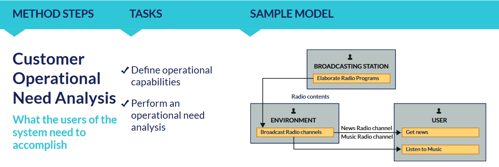
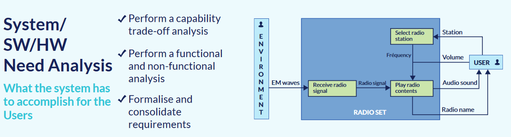
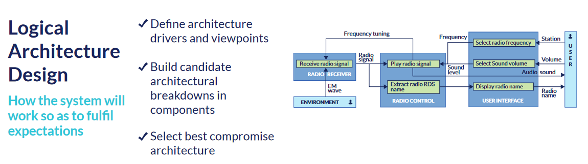
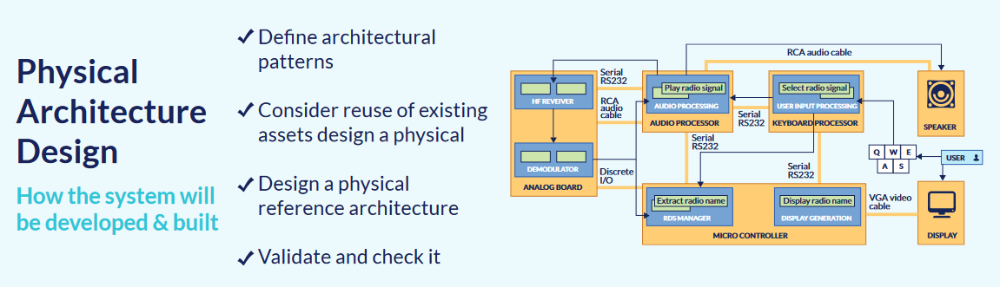

MBSE
Introduction
ARCADIA is a method for Systems Engineering
ARCADIA = ARChitecture Analysis and Design Integrated Approach
The ARCADIA method applies to the design of complex and critical systems, and more generally architectures that are subject to multiple functional and non-functional constraints, including software, electronic, electrical architectures, and industrial processes. It defines a set of practices that guides needs analysis and design to meet an operational requirement
- “Model-based engineering method for systems, hardware and software architectural design”
- Developed by Thales between 2005 and 2010 through an iterative process involving architects of all business domains
- ARCADIA promotes a viewpoint-driven approach (as described in ISO/IEC 42010) and emphasizes a clear distinction between need and solution
Steps
Operational analysis : what the users/stakeholders need to accomplish System need analysis : what is expected from the system (not relevant here : how things work, technical solutions ...) Logical architecture / conceptual solution : how the system will work (not relevant here : which specific sensors, detailed interfaces ...) Physical architecture : how the system will be developed and built
Operational analysis
https://www.linkedin.com/pulse/mbse-arcadia-method-step-by-step-helder-castro/ (02/2023)

System need analysis

Logical architecture

Physical architecture

Resources
https://mbse-capella.org/resources/Datasheet_Arcadia.pdf (2017)
https://mbse-capella.org/arcadia-reference.html
https://en.wikipedia.org/wiki/Arcadia_(engineering)